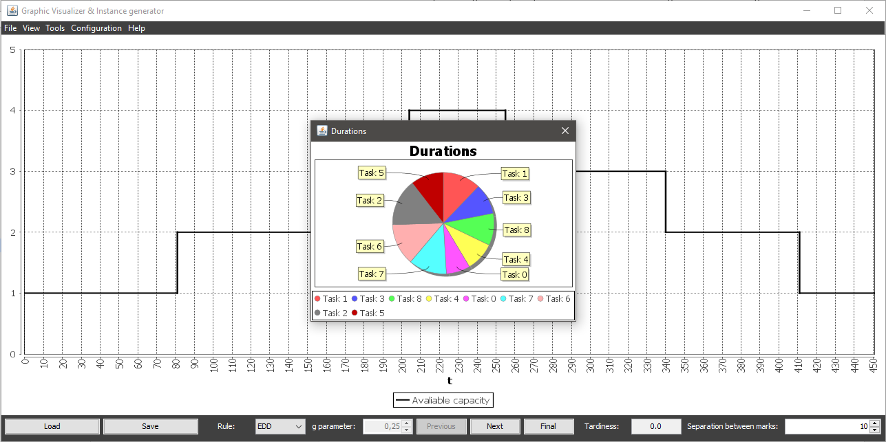

Durations chart shows each task's duration relative to the sum of all durations in a pie chart
Durations chart is updated everytime one task is scheduled, removing from the chart those tasks that have been scheduled, untill the chart gets empty (except in manual scheduling).